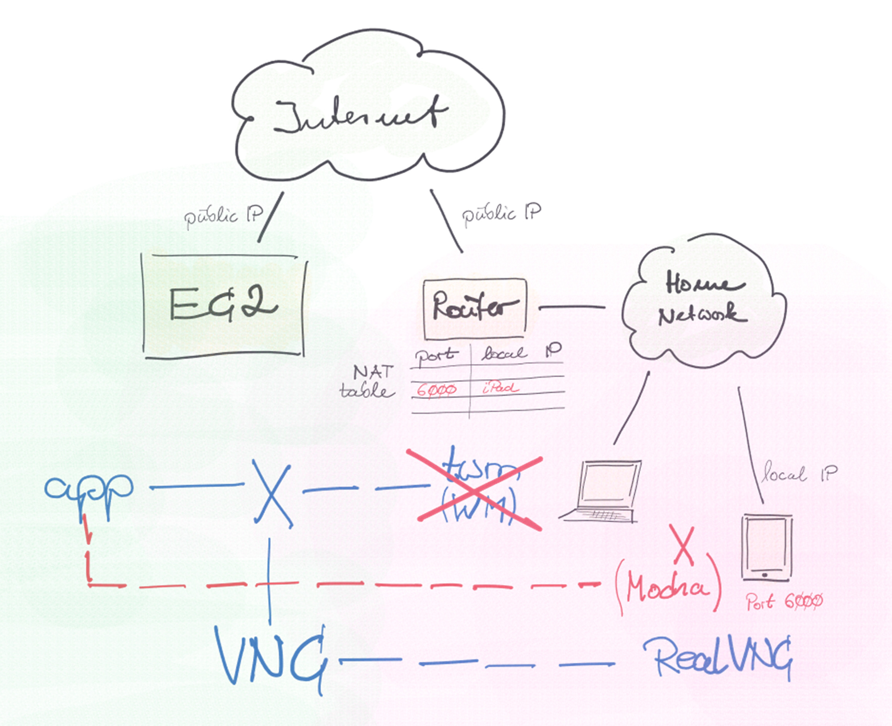

Run X11 Clients on Tablet
A friend of mine recently told me about porting a VNC server to a microcontroller. We joked about it and I capped it off by saying I’ve been thinking about porting X11 to iOS. I ended up using VNC instead, but my buddy said there would probably already be an X11 port for iOS - and he was right. Mocha X11 is an X server implementation for tablets. It is available in the App and Play Stores. There are lite versions with a session interval of five minutes. Too short for serious work, but enough to get a taste of what it’s like to see decades-old software meet modern devices.
My configuration is for an AWS EC2 instance to run my X11 app. I use an AMI with Amazon Linux 2 and installed the required Xorg server packages from preconfigured repositories. Since there were no VNC packages and I didn’t want to bother looking for them I compiled VNC source.
On my iPad I use the RealVNC client to connect to the server. Although not essential, I also set up a windows manager. The AWS repository didn’t provide any, but Cygwin (the swiss army knife for Linos guys on Winos) so I grabbed Cygwin’s twm and set it up on my Winos box.

The new configuration would replace (the blue) Xorg and VNC stuff with the (red) Mocha X11 server for iOS installed on my iPad. It turned out that Mocha provides some basic window manager functionality, making twm obsolete.
Though simpler than before, the new setup requires a change in my network configuration. An X11 server listens on TCP port 6000 for incoming connections. Same goes for Mocha X11 on my iPad. However, the only device in my home network that can be reached from the Internet is the router, which somehow has to know that my iPad is serving incoming X11 requests. I thus had to configure IP Port Forwarding, which basically means putting an entry in the router’s NAT (Network Address Translation) table, telling it to forward incoming requests on port 6000 to my iPad.
While in the flux of setting everything up, I overlooked a key requirement of my app, which is an NVIDIA OpenGL driver supported by the X11 server. So I can’t use my new configuration for this particular app, but it was still fun to set up and that counts…
Remote X11 client with VNC on iPad
-
Spin-up EC2 instance
To access the AWS Management Console I am using an app provided by AWS in the App Store. It offers a rather small subset of features compared to the web version, but it’s fine for starting and stopping instances. -
SSH-connect to instance
To do this, I first need to pick my instance’s public IP address from the console app. AWS sets it to a different value every time it starts because I didn’t buy an Elastic IP Address which would be static. To connect, I use Textastic’s SSH function and paste the IP address into the configuration for my instance. -
Start X11 server on instance
I’m using the bare minimum of Xorg packages to run the X11 server plus standard X11 clients for testing purposes:$ yum list installed xorg* Installed Packages xorg-x11-apps.x86_64 7.7-7.amzn2.0.1 @amzn2-core xorg-x11-proto-devel.noarch 2018.4-1.amzn2.0.2 @amzn2-core xorg-x11-server-Xorg.x86_64 1.20.4-15.amzn2.0.1 @amzn2-core xorg-x11-server-common.x86_64 1.20.4-15.amzn2.0.4 @amzn2-core xorg-x11-xkb-utils.x86_64 7.7-14.amzn2 @amzn2-coreStart X11 server command:
sudo X -ac -config /etc/X11/xorg-nvidia.conf & -
Start VNC server on instance
x11vnc -ncache -display :0 & -
VNC-connect to instance from iPad
I’m using RealVNC, although other implementations should work as well. Just like SSH, this also requires the IP address of the instance as described above. -
Start X window manager on Winos/ Cygwin
Nothing special here, but again, the public IP address of the instance is required. -
Start X11 app on instanceUse app on iPad
Remote X11 client with X (Mocha) on iPad
-
Start X11 server on iPad
I use the Mocha X11 lite version which is free of charge but limited to a session length of 5 minutes. Mocha has some basic windows manager functionality built-in, so there’s no need to use twm. -
Spin-up EC2 instance
Same as above. -
SSH-connect to instance
Same as above. Could be skipped if SSH configuration on instance allows password authentication. -
Start X11 app on instance (or iPad)
Same as above. Could be done with Mocha if SSH configuration on instance allows password authentication, but I set mine up to only use key authentication, which Mocha doesn’t support. -
Use app on iPad
Same as above. Mocha supports Mouse Easy which is another app that turns a smartphone into a Bluetooth trackpad.